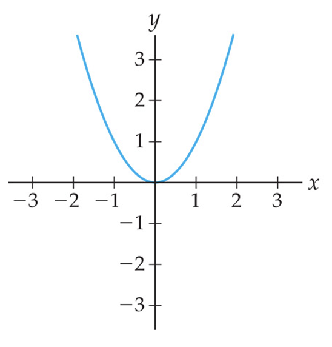
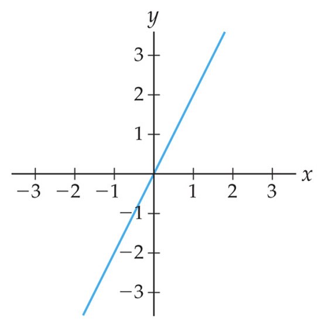

Example 1.7.1.
Let \(f\) be the function defined piecewise by
\begin{equation*}
f(x) = \begin{cases}x^2,\amp \text{ if } x\leq -1\\ 2x, \amp \text{ if } x>-1 \end{cases}
\end{equation*}
This means that if we want to plug in an \(x\)-value that is \(-1\) or less, we use the formula \(x^2\) in the first row. If we want to plug in an \(x\)-value that is greater than \(-1\text{,}\) we use the formula \(2x\text{.}\) So the domain for the function is still \((-\infty,\infty)\text{,}\) but we use \(x^2\) on \((-\infty,-1]\) and use \(2x\) on \((-1,\infty)\text{.}\)
If we want to find the value \(f(-5)\text{,}\) we observe that \(x=-5\leq -1\text{,}\) and so we use the formula \(x^2\) for this value of \(x\text{:}\)
\begin{equation*}
f(-5) = (-5)^2 = 25\text{.}
\end{equation*}
If we want to find the value \(f(3)\text{,}\) we observe that \(x=3>-1\text{,}\) and so we use the formula \(2x\) for this value of \(x\text{:}\)
\begin{equation*}
f(3) = 2(3) = 6\text{.}
\end{equation*}
If we want to find the value \(f(-1)\text{,}\) we observe that \(x=-1\leq -1\text{,}\) because of the equal sign, and so we once again use the formula \(x^2\) for this value of \(x\text{:}\)
\begin{equation*}
f(-1) = (-1)^2 = 1
\end{equation*}
To graph \(f\text{,}\) we begin by graphing the functions \(y=x^2\) and \(y=2x\) that are used in the definition of \(f\text{,}\) as shown in
[cross-reference to target(s) "fig_TaalmanPage46b" missing or not unique]:


\(y=2x\text{.}\)\(y=x^2\)\(y=2x\text{.}\)To graph \(f\text{,}\) we use the graph of \(y=x^2\) on the interval \((-\infty,-1]\) and use \(y=2x\) on \((-1,\infty)\text{.}\) Whether these intervals are open or closed is important. To find \(f(-1)\) we used the first equation \(y=x^2\text{:}\) \(f(-1)=(-1)^2 = 1\text{.}\) Note that when we sketch the graph of \(f\) below, we use open and closed dots to represent the function values corresponding to the ends of open and closed intervals in the domain, respectively.